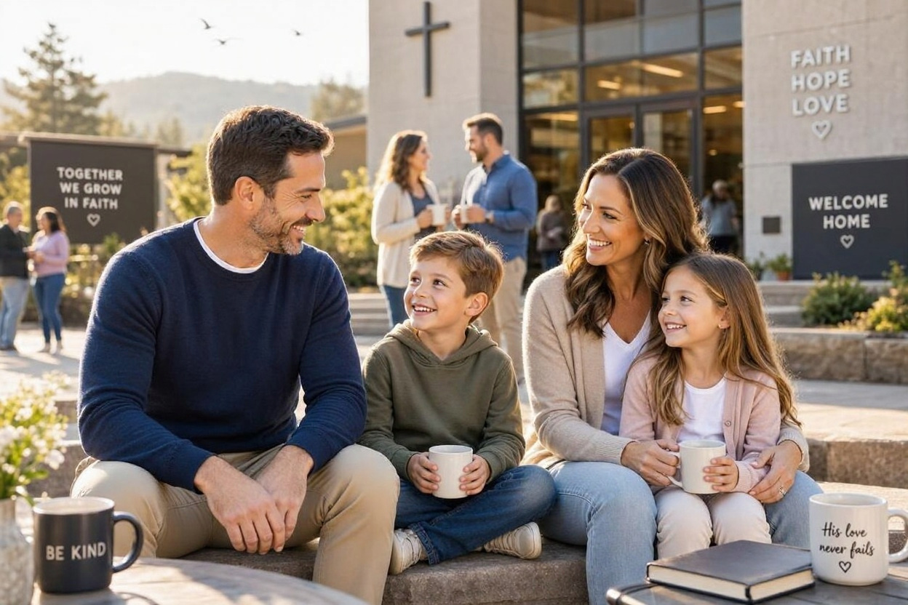
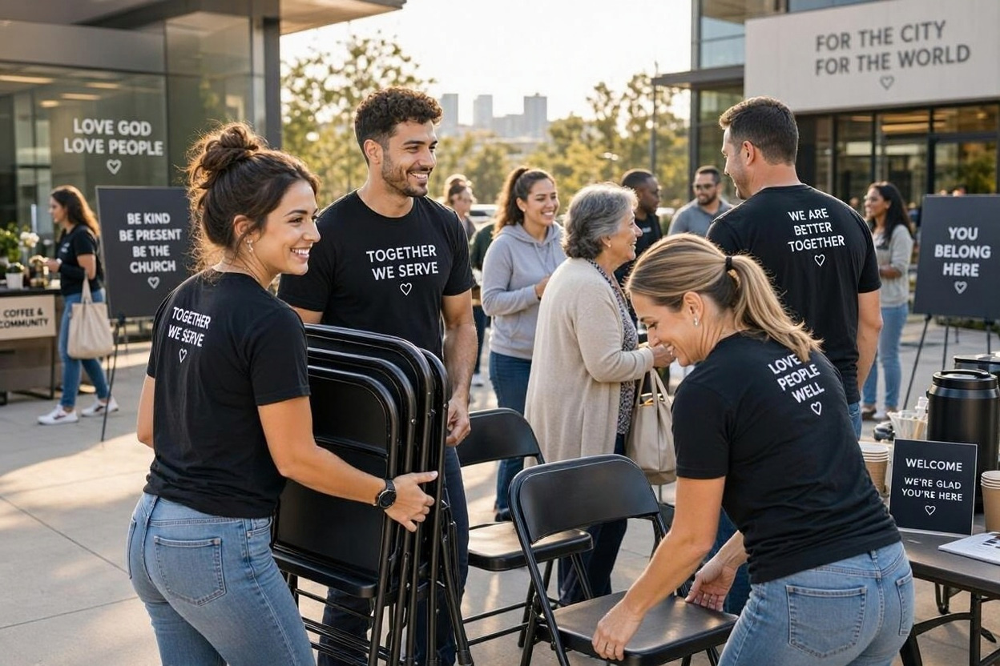

Közösségi élet

Ifjúsági Közösség
Fiatalok számára szervezett találkozások,beszélgetések és programok, ahol a hit, a barátság és a jó hangulat találkozik. Egy hely, aholkérdezhetsz, fejlődhetsz és új barátokra találhatsz.
Érdekel
Családos Közösség
A családok számára fontos, hogy legyen egy támogató közeg, ahol megoszthatják tapasztalataikat és együtt erősödhetnek hitükben. Közös programokkal és találkozásokkal várjuk a családokat.
Érdekel
Önkéntes Szolgálatok
Közösségünk számos területen számít az önkéntesek segítségére. Legyen szó rendezvényekről, technikai szolgálatról vagy karitatív munkáról, mindenki megtalálhatja a helyét a szolgálatban. Gyere hozzánk, segíts velünk!
Érdekel